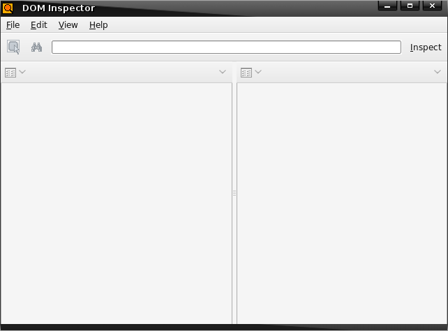
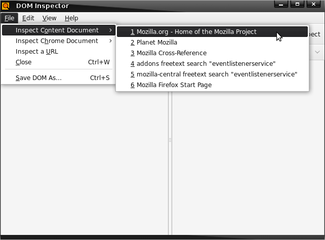
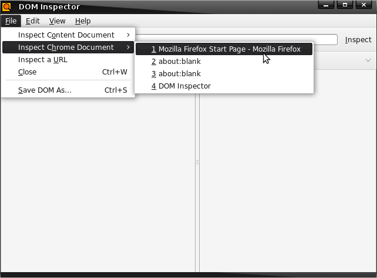
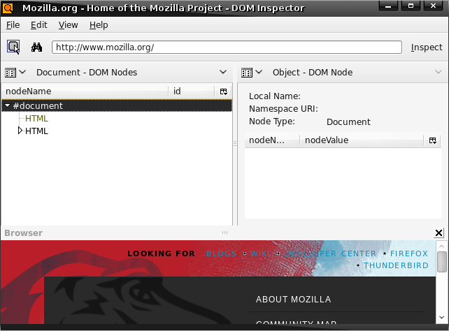
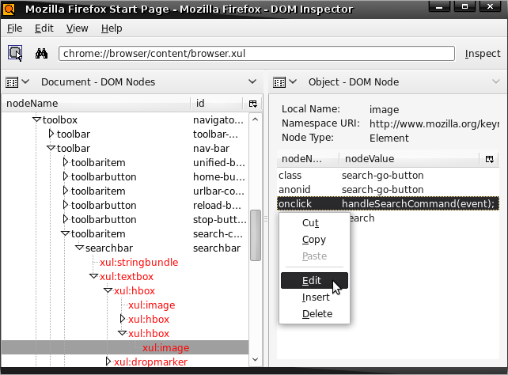
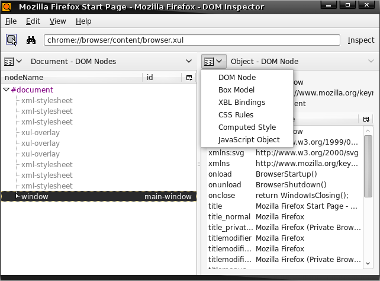
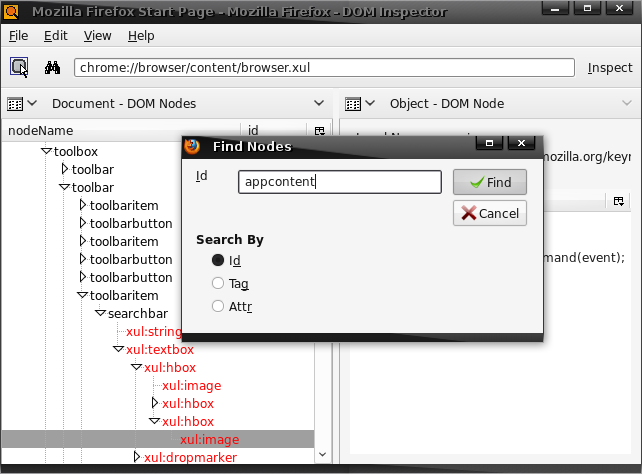

The DOM Inspector is a Mozilla extension that you can access from the Tools > Web Development menu in SeaMonkey, or by selecting the DOM Inspector menu item from the Tools menu in Firefox and Thunderbird, or by using Ctrl/Cmd+Shift+I in either application. DOM Inspector is standalone; it supports all toolkit applications, and it's possible to embed it in your own XULRunner app. DOM Inspector can serve as a sanity check to verify the state of the DOM, or it can be used to manipulate the DOM by hand, if desired.
{kind=link}
When you first start the DOM Inspector, you are presented with a two-pane application window that looks a little like the main Mozilla browser. Like the browser, the DOM Inspector includes an address bar, and some of the same menus. In SeaMonkey additional global menus will be available.

Inspecting a Document
When the DOM Inspector opens, it may or may not load an associated document, depending on the host application. If the DOM Inspector doesn't automatically load a document or loads a document other than the one you'd like to inspect, you can select the desired document a few different ways.
Inspecting Content Documents
The Inspect Content Document menupopup can be accessed from the File menu, and it will list currently loaded content documents. In Firefox and SeaMonkey browser, these will be the webpages you have opened in tabs. For Thunderbird and SeaMonkey Mail and News, any messages you're viewing will be listed here.
Inspecting Chrome Documents
The Inspect Chrome Document menupopup can be accessed from the File menu , and it will contain the list of currently loaded chrome windows and subdocuments. A browser window and the DOM Inspector are likely be already open and displayed in this list. The DOM Inspector keeps track of all the windows that are open, so to inspect the DOM of a particular window in the DOM Inspector, simply access that window as you would normally and then choose its title from this dynamically updated menulist.

Inspecting arbitrary URLs
You may also inspect the DOM of arbitrary URLs by using the Inspect a URL menuitem in the File menu, or by just entering a URL into the DOM Inspector's address bar and clicking Inspect or pressing enter. For example, you can enter http://www.mozilla.org in the address bar and see the DOM structure of the mozilla.org home page.
You should not use this approach to inspect chrome documents. Instead, ensure that the document loads via normal means and use the Inspect Chrome Document menupopup to select it for inspection.

When you inspect a web page with this method, a browser pane at the bottom of the DOM Inspector window will open up, displaying the web page. This allows you to use the DOM Inspector without having to use a separate browser window, or without embedding a browser in your application at all. If you find that the browser pane takes up too much space, you may close it, but you will not be able to observe any of the visual consequences of your actions.
Using the DOM Inspector
Once you've opened the document for the page or chrome you are interested in, you'll see that it loads the DOM Nodes viewer in the document pane and the DOM Node viewer in the object pane. In the DOM Nodes viewer, there should be a structured, hierarchical view of the DOM. By clicking around in the document pane, you'll see that the viewers are linked; whenever you select a new node from the DOM Nodes viewer, the DOM Node viewer is automatically updated to reflect the information for that node. Linked viewers are the first major aspect to understand when learning how to use the DOM Inspector.
DOM Inspector viewers
Note that these viewers are just two viewers that the DOM Inspector provides. It's possible to use other viewers, but for now we'll stick to describing the DOM Nodes viewer and the DOM Node viewer.
You can use the DOM Nodes viewer in the document pane of the DOM Inspector to find and inspect nodes you are interested in. One of the biggest and most immediate advantages that this brings to your web and application development is that it makes it possible to find the markup and the nodes in which the interesting parts of a page or a piece of the user interface are defined. One common use of the DOM Inspector is to find the name and location of particular icon being used in the user interface, which is not an easy task otherwise. If you're inspecting a chrome document, as you select nodes in the DOM Nodes viewer, the rendered versions of those nodes are highlighted in the user interface itself. (Note that there are bugs which prevent the flasher from DOM Inspector APIs from working correctly on certain platforms.)
If you inspect the main browser window, for example, and select nodes in the DOM Nodes viewer (other than the elements which have no visible UI as is the case with the endless list of script elements that are loaded into browser.xul), you will see the various parts of the browser interface being highlighted with a blinking red border. You can traverse the structure and go from the topmost parts parts of the DOM tree to lower level nodes, such as the "search-go-button" icon that lets users perform a query using the selected search engine.

Now, once you have selected a node like the "search-go-button" node, you can select any one of several viewers to display information about that node in the object pane of the DOM Inspector application window, all of which are available from the menupopup accessed from the upper left corner of the the object pane.

In order to find out what the actual name of the file is being used to provide the search go icon, you can select the CSS Rules viewer from this menu and see the various selectors and rules that have been applied. The rule that applies the search icon to the element uses a class simple selector and uses a list-style-image property to point to a file in the current theme.
The list of viewers available from the viewer menu gives you some idea about how extensive the DOM Inspector's inspecting capabilities are. The following descriptions provide an overview of what these viewers are about:
The DOM Nodes viewer shows attributes of nodes that can take them, or the text content of text nodes, comments, and processing instructions. The attributes and text contents may also be edited.
The Box Model viewer gives various metrics about XUL and HTML elements, including placement and size.
The XBL Bindings viewer lists the XBL bindings attached to elements. If a binding extends another binding, the binding menulist will list them in descending order to to "root" binding.
The CSS Rules viewer shows the CSS rules that are applied to the node. Alternatively, when used in conjunction with the Style Sheets viewer, the CSS Rules viewer lists all recognized rules from that style sheet in order. Properties may be also be edited. Rules applying to pseudo-elements do not appear.
The JavaScript Object viewer gives a hierarchical tree of the object pane's subject. The JavaScript Object viewer also allows JavaScript to be evaluated by selecting the appropriate menuitem in the context menu.
Basic actions of the DOM Nodes viewer
Selecting elements by click
Another powerful interactive feature of the DOM Inspector is that when you have the DOM Inspector open and have enabled this functionality by choosing Edit > Select Element by Click or by clicking the little magnifying glass icon in the upper left portion of the DOM Inspector application, you can click anywhere in a loaded web page or the the inspect chrome document, and the element you click will be shown in the document pane in the DOM Nodes viewer and information displayed in the object pane.
Searching for Nodes in the DOM
Another way to inspect the DOM is to search for particular elements you're interested in by ID, class, or attribute. When you select Edit > Find Nodes... or press Ctrl + F, the DOM Inspector displays a find dialog that lets you find elements in various ways, and that gives you incremental searching by way of the <F3> shortcut key.

Updating the DOM Dynamically
Another feature to mention in this introduction is the ability is the ability the DOM Inspector gives you to dynamically update information reflected in the DOM about web pages, user interface, and other elements. Note that when the DOM Inspector displays information about a particular node or subtree, it presents individual nodes and their values (in the DOM, attributes are subnodes of elements, typically) in an active list. You can perform actions on the individual items in this list from the context menu and the Edit menu, both of which contain menutimes that allow you edit the values of those attributes.
This interactivity allows you to shrink and grow element size, change icons, and do other layout-tweaking updates—all without actually changing the DOM as it is defined in the file on disk.
Loving the Inspector
The DOM Inspector can take some figuring out, but once you get used to it, you may find that these structured views of web pages and interfaces were exactly the aspects of your own application development that were missing. The DOM Inspector not only presents all this information about pages in a clear and structured way, it gives you way to find and update those structures, and it's simple to access via shortcuts and menus already available in the Mozilla browser. Used in concert with Mozilla tools like Venkman, the JavaScript debugger, the DOM Inspector can give you a complete view of any web page or DOM-based application interface.